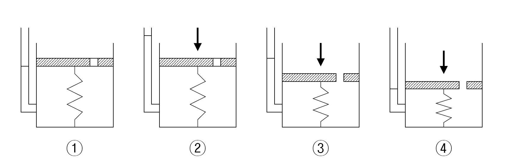
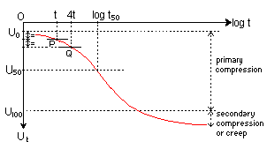
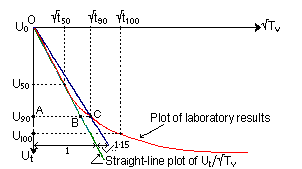

Cours: Mécanique des sols
Pour les étudiants M1 en géotechnique
Sommaire du cours
Chapitre 2: Hydraulique des sols
La présence d'eau (nappe phéatique) dans le sol est à l'origine de différents problèmes pratiques. L'eau est l'une des principaux facteurs mis en jeux dans la stabilité des talus, car elle réduit le coefficient de sécurité. L'eau est la cause de divers phénomènes susceptibles de compromettre la stabilité des ouvrages, comme le Renard, la boulance et le soufflage (ou claquage).
L'une des solutions permettant de diminuer les risques liés à l'eau consiste souvent à rabattre la nappe à l'aide de puits filitrants, de pompes immérgéesn de drains...ect. Néanmoins, les conséquences sont parfois dramatiques, car un rabattement entraîne des desséchements dans le voisinage (étangs, terrains de cultutre) ainsi que des tassements des ouvrages.
Le sol est constitué de couches qui permettent ou non la circulation de l'eau. En effet, il existe des couches de graviers ou de sables grossiers où l'eau peut circuler facilement sous l'action de la gravité dites "couches aquifères". Ce sont des formations géologiques suffisamment poreuses et perméables pour contenir, de façon temporaire, ou permanente une nappe d'eau souterraine.
Au sein de ces aquifères, on appelle "nappe" la partie du sol saturé en eau, là où les interstices entre les grains solides sont entièrement remplis d'eau, ce qui permet à celui-ci de s'écouler. On citera ci-après quelques définitions utiles :
- Nappes souterraines : si les sols sont saturés et l'eau est libre ;
- Terrains aquifères : ils sont constitués de sol perméable, l'eau circule avec des débits importants (sables, graviers) ;
- Terrains aquifuges : ils sont constitués de sol peu perméable et les débits d'eau sont insignifiants (argiles) ;
- Surface de la nappe : surface de l'eau limitant la partie supérieure de la nappe ;
- Nappe phréatique : c'est la première nappe rencontrée à partir de la surface du terrain naturelle ;
- Nappe libre : si le niveau phréatique s'établit dans la couche perméable, la pression de l'eau interstitielle à la surface de la nappe est nulle ;
- Nappe captive (ou artésienne) : si le niveau de la nappe s'établit plus haut de la limite supérieure de la couche perméable. La pression de l'eau à la surface de la nappe n'est pas nulle (positive).
Notons qu'en réalité, la nappe phéatique est le lieu où se déroule la majorité des écoulement. Il est rare de ne rencontrer qu'une seule nappe. La plupart du temps, il y a une superposition de plusieurs niveaux d'eau.
Caractéristiques de l'écoulement
L'eau circule dans les pores du sol.
Chapitre 3: Déformations des sols
Comment se répartissent les contraintes dans un sol ?
Dans un sol, les contraintes totales sont la somme des contraintes effectives (qui sont des contraintes transmises dans le squelette des grains solides du sol, responsables des déformations σ' et de la résistance au cisaillement τ') et la pression interstitielle (les seules contraintes pouvant exister dans l’eau sont des pressions interstitielle u, sans cisaillement τw=0).
Les efforts se transmettent dans le sol à travers les grains et l’eau interstitielle. En raison de la distribution aléatoire des grains, il n’est pas possible d’étudier la répartition réelle des contraintes en fonction de la position et de la taille des grains.
Bien que les différentes phases qui forment un sol (gaz + liquide + solide) sont régies par des lois différentes, le sol est considéré comme un milieu homogène, on envisage alors une loi unique en introduisant la notion de contrainte effective.
C’est à la suite d’essais de laboratoire que Karl Terzaghi, dans les années 1920, a postulé la relation la plus importante en mécanique des sols. Le postulat de Terzaghi consiste à formuler l’existence d’un nouveau tenseur de contraintes : le tenseur des contraintes effectives qui gouverne à lui seul le comportement du sol et du squelette granulaire.
Postulat de Terzaghi : en un point sur une facette quelconque :
σ = σ' + u ;
τ = τ' (τw=0).
σ: composante normale de la contrainte totale ;τ: composante tangentielle de la contrainte totale ;σ': composante normale de la contrainte effective ;τ': composante de cisaillement de la contrainte effective ;u: pression du fluide (eau ou air) ;τw: contrainte de cisaillement de l'eau, qui est nulle.
On appelle contrainte naturelle (ou géostatique) la contrainte s'exerçant dans un sol à surface libre horizontale avant tout chargement ; elle correspond généralement au poids des terres qui surmontent le point considéré. La facette considérée ayant sa normale verticale, la contrainte normale correspondante est notée σv0
Donc, la contrainte naturelle σv0 est la contrainte dans le sol au repos et elle sera notée dorénavant σ0.
Calcul des contraintes naturelles : σ0 = σ'0 + u0
- Cas d'un sol homogène (à surface horizontale)
En considérant le sol sec
γd(γd: poids volumique sec du sol) (pas de nappe), les contraintes en un point M considéré, situé à une profondeur z, sont données parσ0 = γd.z ; u = 0(pas de nappe veut dire pas de pression interstitielle).Donc :
σ0 = σ'0 + u0-->σ0 = σ'0 = γd.z. - Cas d'un sol saturé (à nappe phréatique en surface)
En prenant le sol saturé
γsat, les contraintes en un point M situé à une profondeur z sont données par :σ0 = γsat.z ; u0 = γw.z.Donc :
σ0 = σ'0 + u0-->σ'0 = σ0 - u0 = (γsat - γw).z = γ'.z - Cas d'un sol submergé (à nappe phréatique au-dessus du terrain naturel)
Soit un sol homogène saturé
γsatet submergé (nappe se trouve à une côtehwpar rapport au terrain naturel). Les contraintes verticales au repos en un point M situé à une profondeur z par rapport au terrain naturel sont données par :σ0 = γsat.z + γw.hw ; u0 = γw.(hw + z)ce qui implique doncσ'0 = γ'.z.Remarque : les contraintes totales
σ0et interstitiellesu0dépendent directement de la hauteur d'eauhw. Par contre la contrainte effectiveσ'0est indépendante de la hauteur d'eau. La contrainte effective est la même comme si la nappe est en surface. - Cas d'une nappe peu profonde (nappe phréatique en dessous du terrain naturel)
Soit un sol homogène de grand épaisseur. Les relevets piezométriques ont révélé la présence d'une NP peu profonde située à une profondeur
hwpar rapport au TN. On peut supposer plusieurs variantes pour le sol situé au-dessus de la NP. Prenant dans cet exemple un sol sec au-dessus de la NP :- Pour un point M situé à une profondeur
ztel quezest inférieure ou égale àhw(donc on parle du sol au-dessus de la NP) ;σ0 = γd.z;u = 0et doncσ0 = σ'0 = γsat.z. - Pour un point M situé à une profondeur
ztel quezest supérieure àhw(donc on parle du sol au-dessous de la NP) ;σ0 = γsat(z - hw) + γd.hw;u = γw(z - hw)ce qui impliqueσ'0 = γsat(z - hw) + γd.hw - γw(z - hw) = (γsat - γw)(z - hw) + γd.hw = γ'(z - hw) + γd.hw.
On peut jouer avec les variantes, en supposant que le sol au-dessus est humide ou même saturé par capillariter. Exercez-vous!
- Pour un point M situé à une profondeur
- Cas d'un sol multicouche
- Cas d'un sol à surface inclinée
Si le sol est soumis à sa surface à un chargement uniforme d'intensité q sur une grande étendue, la contrainte Δσ due à q à la profondeur z est contante et égale à q.
Dans le cas contraire, la contrainte Δσ est calculée par la théorie de l'élasticité. Le sol est considéré comme un milieu semi-infini, limité par un plan horizontal, élastique et non-pesant.
Une charge superficielle (sur la surface)
On peut citer deux types de charges :
- Charge concentrée Q
Boussinesq a développé une théorie permettant de déterminer le tenseur des contraintes en un point situé à la profondeur z dans un milieu semi-infini, élastique, non-pesant, chargé par une force ponctuelle verticale
Q.La formule de Boussinesq (1885) permet le calcul de
Δσen fonction de la profondeur z, et s'écrit comme suit :Δσ = (Q/z2).NB; avecNB = f(r/z)sur une abaque ou par la formuleNB = (3/2π)[1/(1+(r/z)2)]5/2. - Charge répartie q
En cas d'une répartition de charge q sur une aire S à la surface du milieu élastique et non pesant, on pourra citer plusieurs cas : la charge répartie est uniforme, sous forme de triange ou trapézoïdale. Et si la charge répartie a une surface rectangulaire ou circulaire. Et si le charge répartie est sur un milieu semi-infini ou un milieu fini. Tous ceci sont des cas de figures pour le calcul de l'accroissement de contraintes due aux charges dans un massif de sol.
On commence par la définition du principe de calcul pour une charge uniforme dans un milieu semi-infini et dans un milieu fini :
- Cas d'un milieu semi-infini
Pour une charge rectangulaire ; c'est l'intégration de la formule de Boussinesq qui permet de déterminer la contrainte verticale
Δσpour différentes distributions de charges. Les hypothèses pour l'application sont : un massif semi-infini, un massif élastique et non-pesant, une surface horizontale et les surcharges sont verticales et uniformément réparties. La formule est :Δσ = I.qavecI: coefficient d'influence en fonction de la profondeur, la forme et la dimension de l'aire chargée et de l'écartement par rapport à la zone chargée. Dans la pratiqueIest en général déterminé à l'aide d'abaques établis pour des géométries de chargement.Pour une charge circulaire ; selon Foster et Ahlvin (1954), pour une charge de rayon R, placée dans un milieu est située à grande profondeur H, le milieu est considéré comme semi-infini si la condition suivante est vérifiée
6R inférieurs à H. Le calcul est le même, avec :Δσ = I.q, où la valeur de I est souvent présentée sous forme d'abaque. - Cas d'un milieu fini
On applique la méthode de Burmister pour une charge à surface rectangulaire de longueur L et de largeur B, placée sur un massif de sol d'épaisseur limitée H, le milieu est considéré comme fini si la condition suivante est vérifiée
L+2B supérieur ou égal à H. Ainsi, l'accroissement de contrainte est donné parΔσ = q.KH0avecKH0est le coefficient d'amortissement en f(L/B; z/H; β'; ν)On applique la méthode de Milovitch pour une charge à surface circulaire de rayon R, qui fait intervenir le coefficient de poisson ν. Le milieu est considéré comme fini si la condition suivante est vérifiée
6R supérieur ou égal à H. L'accroissement de contrainte pour un point situé sous la surface chargée à une distance r de l'axe à une profondeur z est donné par :Δσ = q.KHZavecKHZcoefficient d'influence = f(z/H; H/R; r/R; ν).
Y a aussi les cas d'une charge triangulaire ou d'une charge trapèzoïdale.
- Cas d'un milieu semi-infini
Une charge ancrée dans le sol (fondation fichée)
Soit q0 la surcharge apportée par une fondation ; pour la construire, il a fallu excaver le sol sur une profondeur D et donc supprimer une contrainte naturelle σ0 égale à γ.D. La surcharge apporté par la construction de la fondation, à prendre en compte dans les calculs, est donc : q = q0 - γ.D.
Remarque : Dans les calculs de fondations superficielles, les profondeurs sont souvent comptées à partir de la semelle et non à partir de la surface du sol.
Le sol est assimilé à un milieu semi-infini élastique à surface horizontale. Le calcul des contraintes dans un massif pesant et chargé est basé sur l'utilisation du principe de superposition. Ce dernier résulte de l'hypothèse sur la loi de comportement du sol élastique linéaire.
Dans le domaine élastique linéaire, l'effet produit par l'action simultanée de plusieurs forces est égal à la somme de ceux produits par chacune des forces agissantes séparément.
σ = σv0 + Δσσ: contrainte à une profondeur z ;σv0: contrainte due au poids des terres (contrainte naturelle ou géostatique) ;Δσ: contraintes dues aux surcharges.
Comportement des sols aux surcharges
Dans les sols complètement saturés, une contrainte de compression provoque une diminution de volumes des sols. Cette variation de volume ne peut prendre place que par expulsion d’eau, puisque l’eau interstitielle et les grains solides sont incompressibles.
-
Les sols grenus ont un seul comportement aux surcharges : un comportement rapide, dit à court terme
t0. Car la perméabilitéKest importante, donc le sol est drainable ce qui fait qu'il n'y a pas de développement de surpression interstitielleΔU = 0.Tableau: Comportement toujours à court terme des sols grenus
Au repos Chargement Chargé σ0Δσσ = σ0 + Δσσ'0Δσ'σ' = σ'0 + Δσ'u0ΔU = 0u = u0Puisque
ΔU = 0 ; Δσ = Δσ'; donc la contrainte effective réelle pour les sols grenusσ' = γ'.z + I.q'. -
Le comportement des sols fins durant le processus de consolidation est différent, les mouvements de l’eau se font très lentement à cause de la faible perméabilité, ce qui nécessite un temps considérable pour l’expulsion de l’excès d’eau. De-là on définit deux comportements des sols fins aux surcharges: un comportement à court terme
t0, et un comportement à long termet100.Tableau: Comportement à court terme et à long terme des sols fins
à court terme t0Au repos Chargement Chargé σ0Δσσ = σ0 + Δσσ'0Δσ' = 0σ' = σ'0u0ΔUu = u0 + ΔUà long terme t100Au repos Chargement Chargé σ0Δσσ = σ0 + Δσσ'0Δσ'σ' = σ'0 + Δσ'u0ΔU = 0u = u0
(Consolidation : l’évolution des tassements dans le temps.)
Chapitre 4: Compressibilité des sols
Dans les sols complètement saturés, les vides sont remplis d'eau. Une contrainte de compression provoque une diminution de volumes des sols. Cette variation de volume ne peut prendre place que par expulsion d’eau, puisque l’eau interstitielle et les grains solides sont incompressibles.
Position initiale t0 (σ = u ; ΔH = 0) ;
position au temps ti (σ = σ' + u ; ΔH = ΔHi) ;
position au temps tf (σ = σ' ; ΔH = ΔHf)1
U [%] = (u0 - ΔU)/u02
U [%] = ΔH/ΔHf3
u0: pression interstitielle initiale ;ΔU: surpression interstitielle ;ΔH: tassement au temps t ;ΔHf: tassement final sous la charge appliqué ;U [%]: degré de consolidation.
Dans les sols grenus, tel que les sables saturés, l’expulsion d’eau prend place rapidement. Dans les sols fins, les mouvements de l’eau se font très lentement à cause de la faible perméabilité, ce qui nécessite un temps considérable pour l’expulsion de l’excès d’eau. On appelle consolidation : l’évolution des tassements dans le temps. Le comportement des sols durant le processus de consolidation est analogue au comportement du modèle mécanique représenté par le système ressort et piston (modèle rhéologique de Terzaghi et Peck 1948).
Le processus de consolidation se fait par dissipation de la pression interstitielle au cours du temps, entraînant l’augmentation de la contrainte effective. A chaque étape de ce processus, on peut définir un degré de consolidation U. La valeur de U est aussi proportionnelle à la valeur du tassement qui va se produire au temps t.
En réalité, le flot d’eau et les déplacements durant la consolidation sont presque toujours tridimensionnels, mais extrêmement complexe. Donc Terzaghi propose une analyse unidimensionnelle qui représente une base importante pour l’estimation de la magnitude des tassements.
Hypthèses de la théorie de consolidation
- La couche des sols est horizontale, homogène, d’épaisseur uniforme et latéralement confinée ;
- Le sol est complètement saturé ;
- Les particules de sol et l’eau sont incompressibles ;
- La loi de Darcy est valable ;
- Le coefficient de perméabilité et les autres propriétés des sols restent constants ;
- La pression appliquée est uniforme le long de la surface horizontale ;
- L’excès de pression interstitielle initiale dû à l’application de la charge est uniforme sur toute l’épaisseur de la couche d’argile ;
- La durée étendue de la période de consolidation est entièrement due à la faible perméabilité de la couche d’argile ;
- Une ou deux couches adjacentes à la couche d’argile sont parfaitement drainantes en comparaison avec l’argile ;
- Le poids propre du sol peut être négligé.
Formulation de la théorie de consolidation
Le cas simple de consolidation unidimensionnelle d'une couche soumise à un chargement uniforme, basé sur les hypothèses de la théorie, était formulé par Terzaghi et se traduit par l'équation différentielle suivante :
∂U/∂t = [K/(ρw.g.mv)].(∂2u/∂z2)4
cv = K/(ρw.g.mv)5
∂U/∂t = cv.(∂2U/∂z2)6
U [%] = f(cv.t/h2)7
Tv = cv.t/h2 ==> U [%] = f(Tv)8
u: excès de pression interstitielle ;z: hauteur verticale à ce point ;K: coefficient de perméabilité de l'argile ;mv: coefficient de compressibilité volumique ;ρw: masse volumique de l'eau ;g: accélération de la pesanteur ;Tv: temps théorique ;U [%]: degré de consolidation ;cv: coefficient de consolidation.
Dans la relation (4), on peut remplacer le coefficient composé par le paramètre cv, appelé coefficient de consolidation, sous sa forme pratique, la relation (5) exprime le pourcentage de consolidation en fonction du coefficient cv, h et t ; où h est la distance par rapport à la surface de drainage. La relation (8) est un nombre sans dimension appelé le facteur temps théorique Tv. La relation entre U [%] = f(Tv) représente la solution de l'équation (5), tel que dérivé mathématiquement par Terzaghi (1943).
Les phases de consolidation
- Compression initiale prend place presque simultanément avec l'incrément de charge et avant le début de drainage. Elle est due partiellement à la compression des petites poches de gaz à l'intérieur de l'espace poreux et à la surface de contact entre la cellule et la pression de chargement. Une faible proportion peut être due à la compression élastique qui est réversible à la décharge.
- Consolidation primaire est dépendante du temps de compression qui est du à la dissipation de l'excès de la pression interstitielle sous chargement comme expliqué par la théorie de Terzaghi. Cette phase s'apparente à la courbe théorique dans la plupart des argiles. Dans la plupart des applications, seule cette phase est utilisée pour l'estimation des tassements. Pour les argiles inorganiques, elle est généralement la plus importante des 3 phases. La phase primaire est la seule à être appelée correctement consolidation.
- Consolidation secondaire continue après que l'excès de la pression interstitielle u de la phase primaire soit "virtuellement dissipé". Le mécanisme est complexe, mais la consolidation secondaire est pensée être due aux mouvements continues des particules tel que le sol s'ajuste avec l'augmentation de la contrainte effective. Cette phase n'est généralement pas réversible à la décharge, bien qu'un gonflement est observé. Cependant pour les tourbes et les argiles hautement organiques, la compression secondaire est de plus grande importance et peut excéder le taux de consolidation primaire.
- Méthode log-temps de Casagrande
Depuis ce graphe, on peut trouver le coefficient de consolidation
cvdont la forme a été déjà établie :Tv = cv.t/h2==>cv = Tv.h2/t50Avec :
Tvqu'on connait depuis l'abaque à U (50%) = 0.197 ;t50est prise du graphe à U (50%) en [min] ;cvcoefficient de consolidation se calcul en [m2/an], alors le h [mm] doit être converti ainsi que les autres paramètres.
- Méthode racine carrée du temps - Taylor
Depuis ce graphe, on peut trouver le coefficient de consolidation
cvdont la forme a été déjà établie :Tv = cv.t/h2==>cv = Tv.h2/t90Avec :
Tvqu'on connait depuis l'abaque à U (90%) = 0.848 ;t90est prise du graphe à U (90%) en [min] ;cvcoefficient de consolidation se calcul en [m2/an], alors le h [mm] doit être converti ainsi que les autres paramètres.
Chapitre 5: Tassement des fondations
C'est le déplacement vertical, vers le bas, du sol provoqué par une augmentation des contraintes effectives.
Le tassement se traduit toujours par un déplacement ΔHv (V↘ → ΔV < 0) ; contrairement au tassement, le gonflement est un déplacement du sol vers le haut ΔHv (V↗ → ΔV > 0).
// remarque: bien que les conséquences du gonflement sont inverses à ceux du tassement, cependant les causes du tassement sont essentiellement mécaniques (chargement ↗ σ') ; par contre, le gonflement est un phénomène provoqué par des effets physico-mécaniques (déchargement et apports d'eau).
- Consolidation : diminution de
ΔUjusqu'à ce queΔU = 0, représenté graphiquement parΔH/H = f(log t).- Compression : variation du volume suite à un chargement, représenté graphiquement par
ΔH/H = f(log σ').
Les différentes composantes du tassement
ΔHi(tassement immédiat) : est déterminé par la théorie de l'élasticité. Il dépend du type de milieu, de la rigidité de la fondation (rigide ou souple), la forme de la fondation et au même-temps du point considéré, au centre ou au bord.ΔHc(tassement de consolidation) : il est mesuré à partir d'un essai oedométrique standard.ΔHs(tassement secondaire ou tassement de fluage) : c'est un tassement à long terme après la fin de consolidationΔU = 0et le degréU = 100%.
Caractéristiques mécaniques d'élasticité
La théorie d'élasticité est basée sur la paire module de Young
Eet coefficient de poissonν.
- Coefficient de poisson
ν= (contraction transversaleΔS/S0/ allongement axialΔH/H0) permet de caractériser la contraction de la matière perpendiculairement à la direction de l'effort appliqué. Ainsi le coefficient se formule comme suitν = - εx/εy. Module de Young
Eest une constante élastique qui lie la contrainte à la déformation pour un matériau homogène isotrope. Et donc pour un échantillon ...Poids Contrainte Allongement Déformation P σ = P/S0Δl = l - l0ε = Δl/l0P1 σ1 = P1/S0Δl1 = l1 - l0ε1 = Δl1/l0P2 σ2 = P2/S0Δl2 = l2 - l0ε2 = Δl2/l0P3 σ3 = P3/S0Δl3 = l3 - l0ε3 = Δl3/l0P4 σ4 = P4/S0Δl4 = l4 - l0ε4 = Δl4/l0D'après la loi de Hooke, on dit qu'un matériau se déforme de façon permanente, ou se rompt, bien avant que cette valeur ne soit atteinte. Le module de Young est la pente initiale de la courbe de déformation-contrainte. La loi de Hooke est
σ' = E.ε.
Avec :
S0: section initiale de l'échantillon [unité de surface] ;l0: largeur initiale de l'échantillon [unité de distance] ;H0: hauteur initiale de l'échantillon [unité de distance] ;σ': contrainte effective de l'échantillon [unité de pression] ;P: poids de l'échantillon [unité de masse] ;E: module de Young de l'échantillon [unité de pression] ;ν: coefficient de poisson de l'échantillon ;ε: déformation qu'a subie l'échantillon [%] ;
Calcul du tassement immédiat
Comme on l'a déjà défini, le tassement immédiat ΔHi est déterminé par la théorie de l'élasticité qu'on vient de voir. Il dépend du type de milieu, de la rigidité de la fondation (rigide ou souple), la forme de la fondation et au même-temps du point considéré, au centre ou au bord. Maintenant on va voir les différents cas
Massif semi-infini |
Fondation rectangulaire ( H > L + 2B) |
Semelle flexible ( ΔHiC = 2*ΔHiB) |
xxx |
|---|---|---|---|
| Semelle rigide ( ΔHiC = ΔHiB) |
xxx | ||
| Fondation circulaire ( H > 6R) |
Semelle flexible ( ΔHiC = 2*ΔHiB) |
xxx | |
| xxx | |||
| Semelle rigide ( ΔHiC = ΔHiB) |
xxx | ||
| Massif fini | Fondation rectangulaire ( H > L + 2B) |
Semelle flexible ( ΔHiC = 2*ΔHiB) |
xxx |
| Semelle rigide ( ΔHiC = ΔHiB) |
xxx |
Avec :
B: largeur de la semelle ;L: longueur de la semelle ;H: profondeur du substratum ;R: rayon de la semelle ;ΔHi: tassement immédiat ;ΔHiC: tassement immédiat sous l'axe (au centre) ;ΔHiB: tassement immédiat sous un coin (au bord) ;